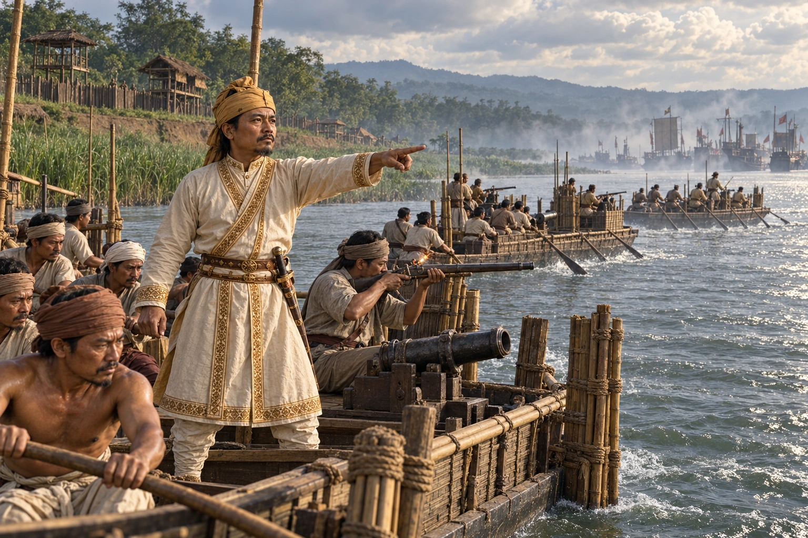

The Mughal War of 1636–1638
1636–1638 · Against the Mughal Empire

Pratap Singha and Balinarayan push west to Sualkuchi and Hajo. The Mughals under Allah Yar Khan strike back and retake Kamrup; Balinarayan dies, and the Samdhara garrison and the naval fight at Duimunisila stop the Mughal advance.
The artwork selects Momai Tamuli directing river defence as a representative moment of the multi-year war.
Sources
People: Pratap Singha (Susenghphaa), Allah Yar Khan, Momai Tamuli Borbarua
Open this scene in the interactive archive · Follow this event on MAP